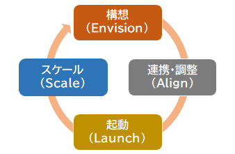

📋 AWS クラウド導入フレームワーク CLF
AWS CAF（Cloud Adoption Framework）は、企業や組織がAWSクラウドを効果的かつ効率的に導入するための ガイドラインとベストプラクティスをまとめたものです。 クラウド移行や運用における技術的・ビジネス的・運用的な課題を解決し、 スムーズな導入を支援します。
AWS CAF とは
AWS CAFは、クラウド導入時に考慮すべき「6つの視点（パースペクティブ）」と、 クラウド導入のプロセスを示す「クラウドトランスフォーメーションジャーニー」、 そしてクラウドによって組織がどのように変化するかを示す「クラウドトランスフォーメーション」から構成されています。
これらを適切に活用することで、企業はクラウド導入を戦略的に進め、 ビジネス価値を最大化することができます。

クラウドトランスフォーメーションジャーニー（4フェーズ）
6つの視点（パースペクティブ）
クラウド導入において考慮すべき視点や領域を示したもので、 クラウド移行や運用の計画を立てる際に利害関係者の役割やニーズを反映し、 包括的な戦略を立てるために利用されます。6つの視点があり、それぞれが特定の問題領域をカバーしています。
クラウドへの投資を通じてデジタルトランスフォーメーション（デジタル変革）を成功させ、 ビジネスの成果をより早く実現することに焦点を当てています。
- 戦略管理
- ポートフォリオ管理
- イノベーション管理
- 製品管理
- 戦略的パートナーシップ
- データの収益化
- ビジネスインサイト
- データサイエンス
クラウド移行を成功させるための人材と組織の変革に焦点を当てた視点です。 テクノロジーとビジネスの橋け渡しとなり、クラウド導入に伴うスキルの習得や、 新しい働き方の導入、リーダーシップの発展を通じて変化に対応できる企業体質を構築します。
- 文化の進化
- トランスフォーメーションのリーダーシップ
- クラウドフルエンシー
- ワークフォースのトランスフォーメーション
- 変革の促進
- 組織設計
- 組織の連携
クラウドに関する取り組みを統制しながら、変化に伴うリスクを最小化し、 組織のベネフィットを最大化することを目的としています。 ルールやポリシーの策定、リスク管理、法規制や業界基準への適合を通じて、 組織全体でクラウドの活用を最適化します。
- プログラムおよびプロジェクト管理
- ベネフィット管理
- リスク管理
- クラウド財務管理
- アプリケーションポートフォリオ管理
- データガバナンス
- データキュレーション
適切なクラウド基盤とデータおよび分析アーキテクチャを設計し、 スケーラブルで効率的な環境を構築することで、ワークロードの迅速な運用を目指します。
- プラットフォームアーキテクチャ
- データアーキテクチャ
- プラットフォームエンジニアリング
- データエンジニアリング
- プロビジョニングとオーケストレーション
- モダンアプリケーション開発
- 継続的インテグレーションと継続的デリバリー
クラウド環境でのデータやシステムの機密性や完全性、可用性を確保することに焦点を当てた指針です。
- セキュリティガバナンス
- セキュリティ保証
- アイデンティティおよび許可管理
- 脅威の検出
- 脆弱性管理
- インフラストラクチャの保護
- データ保護
- アプリケーションのセキュリティ
- インシデント対応
運用プロセスの効率化と信頼性向上に重点を置いた視点です。 運用の自動化や最適化を通じて、クラウドサービスがビジネスのステークホルダーと 合意したレベルで提供されることを目指します。
- 可観測性（オブザーバビリティ）
- イベント管理（AIOps）
- インシデントおよび問題管理
- 変更およびリリース管理
- パフォーマンスおよびキャパシティ管理
- 構成管理
- パッチ管理
- 可用性および継続性管理
- アプリケーション管理
クラウドトランスフォーメーションジャーニー（4フェーズ）
クラウド導入プロセスを段階的に進めるための手順を示したものです。 クラウド導入のライフサイクルを明確化し、各段階で必要な活動や成果を定義します。 4つのフェーズがあり、順序立てて進行することで、導入プロセス全体を管理できます。
クラウドトランスフォーメーションの価値連鎖（バリューチェーン）
クラウド導入によって、組織がどのように変化するかを示したものです。 クラウドは単なるシステム移行ではなく、業務のやり方やビジネスの仕組みそのものを変える力を持っています。 4つの領域で適切な変革を進めることで、クラウドの価値を最大限に活用し、 ビジネス上の目標をより早期に達成できるようになります。
技術（Technology）変革
クラウドを活用して、古いITインフラやアプリケーションを最新化し、 よりアジャイルで効率的なシステムにすることに重点を置きます。 AWSに移行することで、コスト削減、システム管理の効率化、 ダウンタイムやセキュリティリスクの低減が可能になります。
プロセス（Process）変革
ビジネスのデジタル化・自動化を進め、業務の効率を向上させることに重点を置きます。 データ分析や機械学習を活用することで、カスタマーサービスの改善、 業務の最適化、意思決定の迅速化を実現し、 コスト削減と従業員の生産性向上につながります。
組織（Organization）変革
ビジネスチームとテクノロジーチームの連携を強化し、 価値を迅速に届けるためのオペレーションモデルを再構築することに重点を置きます。 製品や価値の流れ（バリューストリーム）を基にチームを編成することで、 部門間の壁をなくし、開発から提供までのプロセスを効率化できます。
製品（Product）変革
クラウドの力を活用して、新しい製品・サービスやビジネスモデルを生み出すことに重点を置きます。 開発スピードを向上させることで、新機能やアプリケーションの市場投入を加速し、 新しい市場の開拓や収益の拡大を可能にします。
- 6つの視点の名称を覚える：ビジネス・人材・ガバナンス・プラットフォーム・セキュリティ・オペレーション
- 各視点の主なステークホルダー（役職）を問う問題が出る。CISO→セキュリティ、CFO→ガバナンスなど
- ジャーニーの4フェーズ：構想（Envision）→連携・整備（Align）→起動（Launch）→スケール（Scale）
- CAFは「どの視点で何を改善すべきか」を特定するフレームワーク。具体的なサービスではなく指針・方針である点に注意
- バリューチェーンの4変革：技術・プロセス・組織・製品（順不同）